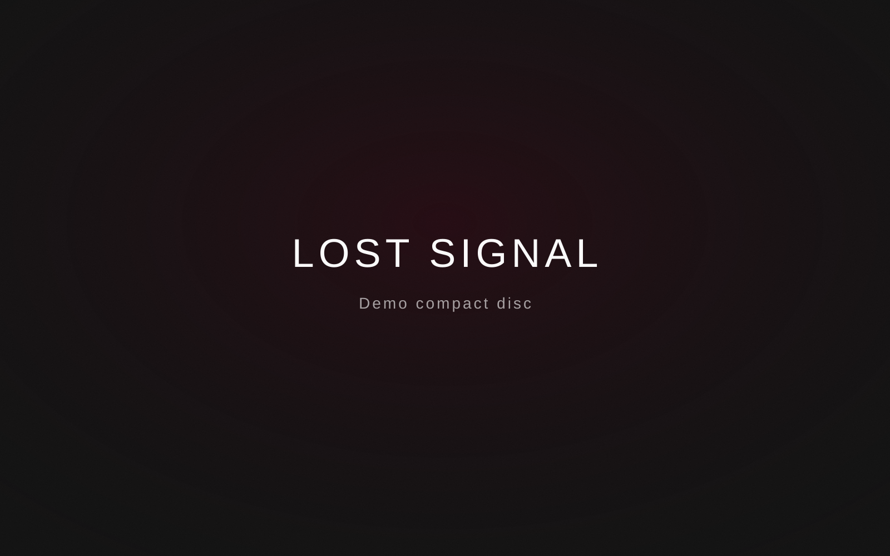

Обновление музыкального архива

Эта запись показывает формат новостей о пополнении коллекции: новый CD, винил, кассета или цифровой мастер.
Каталогизация
Позже можно добавить номер издания, страну производства, состояние носителя, дату приобретения и фотографии матрицы или каталожного номера.
← Назад в блог